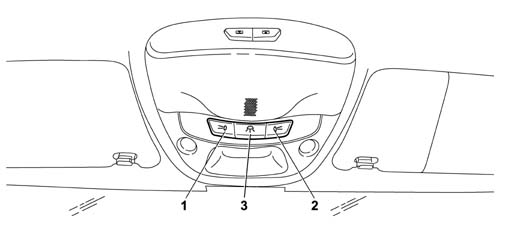

Introduction - BODYSHELL INTERIOR TRIMS AND FITTINGS
- Path
- Descriptions > 70 FITTINGS > 7040 BODYSHELL INTERIOR TRIMS AND FITTINGS > Introduction - BODYSHELL INTERIOR TRIMS AND FITTINGS
- Kind
- system description
- Applies to
- all engines; all production periods
- Interactive page
- https://sloeber94.github.io/elrnDB-lYpsln/en/#/2429864
Applies to: all engines; all production periods
All vehicle interior trim is designed to satisfy severe international flame-resistance standards. The main components are slow-burning: they do not ignite due to accidental contact (for example, if a cigarette is dropped), flames do not develop and, in the presence of fierce heat they burn to produce strong, dense smoke. Trim design and configuration is aimed at producing a high level of acoustic comfort combined with a high degree of passive safety. All the protrusions that could harm car occupants in the case of impact have been eliminated.
Symbols describing the correct use of the baby seat in the presence of a passenger air bag are shown on the inner side of the passenger side sun visor 5580C air bag system.
For greater comfort, light bulbs are fitted on either side of the mirrors and on the right and left sun blinds. A courtesy light is fitted in the front of the passenger compartment and another in the rear. The luggage compartment is also fitted with a courtesy light. Puddle lights are housed in the lower rear area of the door panels (for a description of courtesy light operation 7005M front electric windows.
Applies to: all engines; all production periods
FRONT COURTESY LIGHT
View of front courtesy light

1 - Left side switch 2 - Right side switch 3 - Central switch
Applies to: all engines; all production periods
FRONT COURTESY LIGHT
The front seats are lit by a courtesy light unit that contains two courtesy lights and a spot lamp, each with its own control switch, and a central courtesy light. The interior lighting unit is moved to the middle of the sun visors. The courtesy light comes on when one of the doors is opened. 5505 ELECTRICAL CIRCUIT FOR INSTRUMENTS/INDICATORS
Applies to: all engines; all production periods
PUDDLE LIGHT
Puddle lights in the doors feature a two-tone lens. The lower part, which lights the ground, is white while the upper warning light part is red. The courtesy lights come on when one of the doors on both sides is opened, regardless of ignition key position. They stay on for about 3 minutes with the door open and then go off gradually. The courtesy lights go off over a 3 minute period when the door is closed.
Applies to: all engines; all production periods
LUGGAGE COMPARTMENT COURTESY LIGHT
The luggage compartment is made easier to use by a courtesy light located on the right wheel arch trim. This lights up automatically when the tail-gate is opend and goes off when it is closed.
Applies to: all engines; all production periods
GLOVE COMPARTMENT LIGHT
The facia glove compartment is fitted with an interior light. The light comes on when the flap is opened and goes off when it is closed.